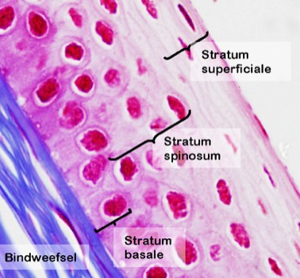
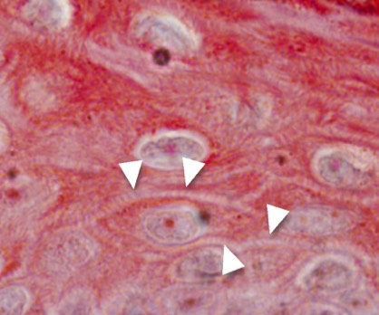

Opbouw van meerlagige epithelen.
Bij meerlagige epithelen benoemen we de verschillende lagen als ‘strata’ (enkelvoud stratum). Het volgende deeltje gaat dieper in op het ontstaan van deze verschillende lagen.
Meerlagig onverhoornd plaveiselepitheel:
De laag van kubische cellen die via hemidesmosen vastgehecht is aan de lamina basalis is de ‘basale laag’ of ‘stratum basale’. Deze laag bevat cellen die constant delen, zodat de meer oppervlakkige cellagen naar boven geduwd worden en het epitheel constant vernieuwt.
De volgende lagen die bovenop het stratum basale liggen - en dus de basaalmembraan niet meer raken- bestaan uit polygonale cellen en noemen we ‘stratum spinosum’. In sommige lichtmicroscopische preparaten lijken deze cellen uitsteeksels te hebben die sterk lijken op doornen (=spina; vandaar de naam). Deze ‘spina’ ontstaan omdat de cellen een stevig cytoskelet hebben en aan elkaar vastzitten via desmosomen. Bij het verwerken van weefsel voor lichtmicroscopische coupes zullen de cellen een beetje krimpen, waardoor de intercellulaire ruimten in deze laag zichtbaar worden en de verbindingsplaatsen uitsteeksels lijken.
De bovenste laag van cellen hebben de plaveivorm, bevatten meer en meer keratinefilamenten en zijn nog steeds levend. Deze bovenste cellaag bevat dus afgeplatte celkernen. Deze laag, die aan het oppervlak ligt van het epitheel, heet het stratum superficiale. Functioneel is bij een onverhoornd meerlagig plaveiselepitheel het oppervlak vochtig (bv. mond, slokdarm, vagina,…).


Overzicht van de verschillende cellagen van een onverhoornd meerlagig plaveiselepitheel. Je ziet een stukje van het hoornvlies van een kat.
Op dit detailbeeld zie je het stratum spinosum van een meerlagig plaveiselepitheel. In de intercellulaire ruimten kan je de spina (pijlpuntjes) duidelijk zien uitsteken.
Vordering zelfstudie bedekkende epithelen: